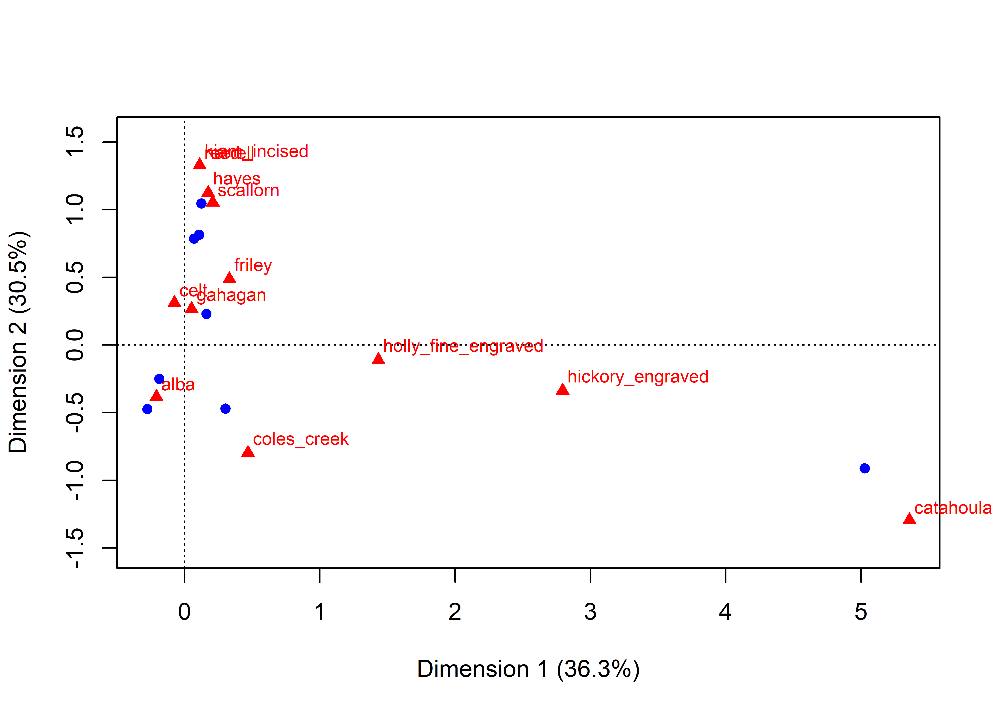
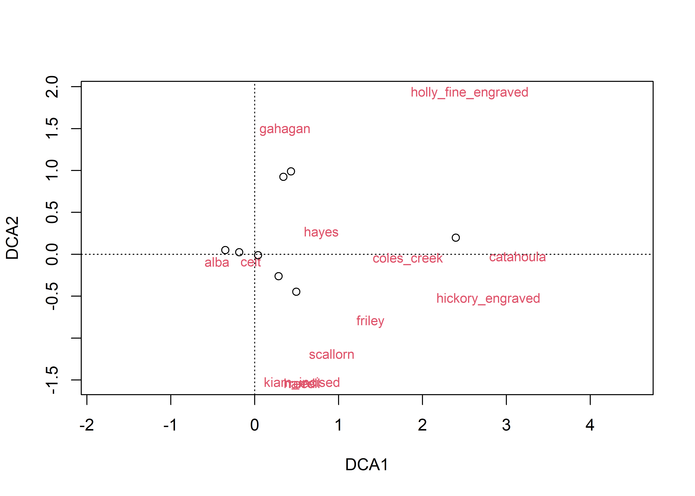
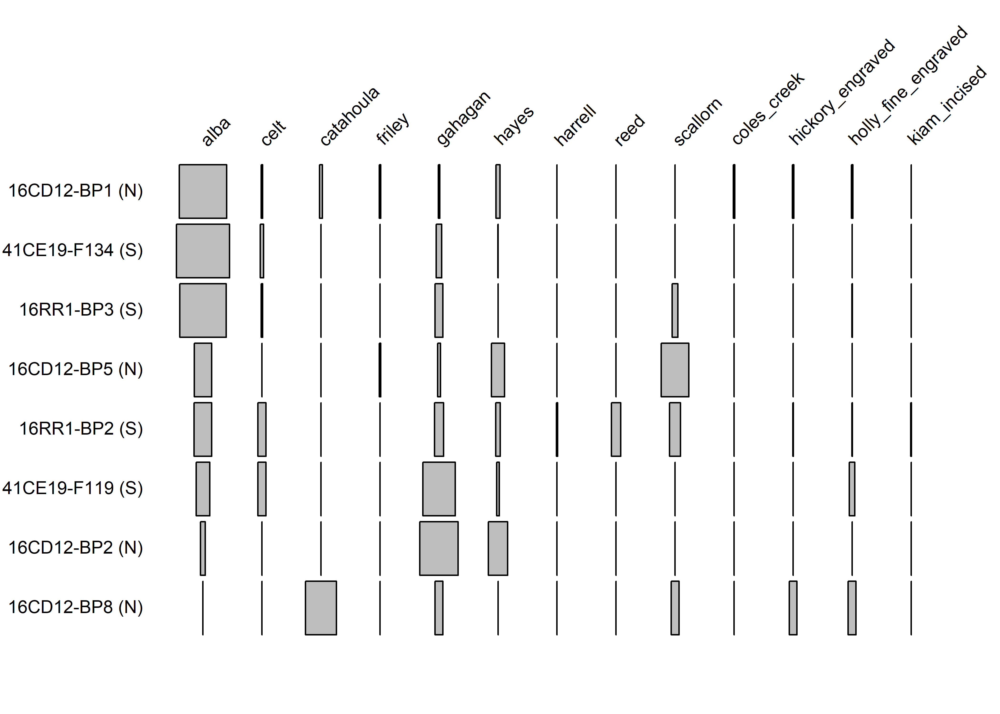
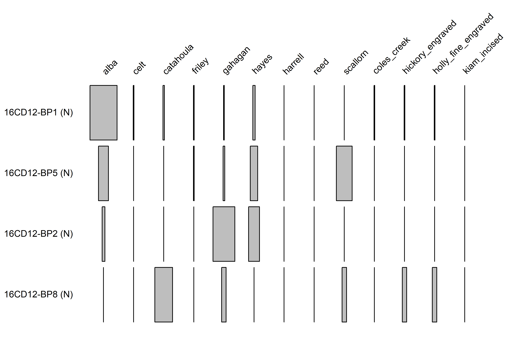
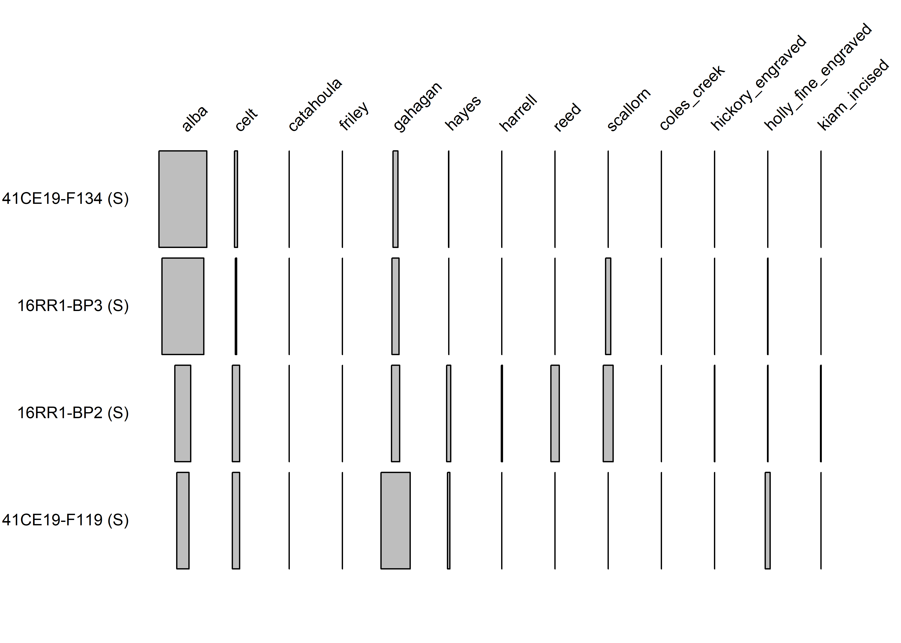

Chapter 2 Seriation
Load the data and summarize row and column sums. Also create gahagan_ct with only the counts using context and region as rownames. Finally create gahagan_pct with percentages.
library(ca)
library(plotrix)
# gahagan <- read.csv("gahagan-diagnostics.csv")
# save(gahagan, file="gahagan-diagnostics.RData")
load("gahagan-diagnostics.RData")
# Structure of the data frame
str(gahagan, give.attr=FALSE)## 'data.frame': 8 obs. of 15 variables:
## $ context : chr "41CE19-F134" "41CE19-F119" "16RR1-BP2" "16RR1-BP3" ...
## $ region : chr "South" "South" "South" "South" ...
## $ alba : int 157 5 31 89 35 1 12 0
## $ celt : int 10 3 14 3 1 0 0 0
## $ catahoula : int 0 0 0 0 2 0 0 4
## $ friley : int 0 0 0 0 1 0 1 0
## $ gahagan : int 16 12 16 15 1 8 2 1
## $ hayes : int 1 1 8 0 3 4 9 0
## $ harrell : int 0 0 2 0 0 0 0 0
## $ reed : int 0 0 16 0 0 0 0 0
## $ scallorn : int 0 0 19 11 0 0 19 1
## $ coles_creek : int 0 0 0 0 1 0 0 0
## $ hickory_engraved : int 0 0 1 0 1 0 0 1
## $ holly_fine_engraved: int 0 2 1 1 1 0 0 1
## $ kiam_incised : int 0 0 1 0 0 0 0 0print(gahagan)## context region alba celt catahoula friley gahagan hayes harrell reed
## 1 41CE19-F134 South 157 10 0 0 16 1 0 0
## 2 41CE19-F119 South 5 3 0 0 12 1 0 0
## 3 16RR1-BP2 South 31 14 0 0 16 8 2 16
## 4 16RR1-BP3 South 89 3 0 0 15 0 0 0
## 5 16CD12-BP1 North 35 1 2 1 1 3 0 0
## 6 16CD12-BP2 North 1 0 0 0 8 4 0 0
## 7 16CD12-BP5 North 12 0 0 1 2 9 0 0
## 8 16CD12-BP8 North 0 0 4 0 1 0 0 0
## scallorn coles_creek hickory_engraved holly_fine_engraved kiam_incised
## 1 0 0 0 0 0
## 2 0 0 0 2 0
## 3 19 0 1 1 1
## 4 11 0 0 1 0
## 5 0 1 1 1 0
## 6 0 0 0 0 0
## 7 19 0 0 0 0
## 8 1 0 1 1 0# Row sums
(RS <- rowSums(gahagan[, -(1:2)]))## [1] 184 23 109 119 46 13 43 8# Column sums
CS <- colSums(gahagan[, -(1:2)])
as.matrix(CS)## [,1]
## alba 330
## celt 31
## catahoula 6
## friley 2
## gahagan 71
## hayes 26
## harrell 2
## reed 16
## scallorn 50
## coles_creek 1
## hickory_engraved 3
## holly_fine_engraved 6
## kiam_incised 1gahagan_ct <- gahagan[, -(1:2)]
labels <- paste0(gahagan$context, " (", substr(gahagan$region, 1, 1), ")")
rownames(gahagan_ct) <- labels
gahagan_pct <- gahagan_ct / RS * 100Use the first dimension of a corresponce analysis on gahagan_ct to provide an initial ordering of the data (ca_ord).
gahagan_ca <- ca(gahagan_ct)
plot.ca(gahagan_ca, labels=c(0, 2), cex = .75)
# Correspondence Analysis Ordering on Dimension 1
(ca_ord <- order(gahagan_ca$rowcoord[, 1]))## [1] 1 4 3 6 7 2 5 8Use the first projection of a detrended corresponce analysis on gahagan_ct to provide an alternate ordering of the data (dec_ord). Use correlation to compare the two sequences. Detach packages that contain functions that interfere with the seriation package.
library(vegan)
gahagan_dec <- decorana(gahagan_ct)
plot(gahagan_dec, display="species")
points(gahagan_dec, display="sites")
# Decorana Ordering on Projection 1
(dec_ord <- order(gahagan_dec$rproj[, 1]))## [1] 1 4 5 3 2 6 7 8(cor.test(ca_ord, dec_ord, method="kendall"))##
## Kendall's rank correlation tau
##
## data: ca_ord and dec_ord
## T = 16, p-value = 0.7195
## alternative hypothesis: true tau is not equal to 0
## sample estimates:
## tau
## 0.1428571detach("package:vegan")
detach("package:permute")Load the seriation package to use the the manhattan distance matrices to compare the orderings. Robinson developed the method of seriation by permuting distance matrices. He used a similarity matrix where 200 was the index value for an ordering with itself. A perfect matrix should show consistent decreases from the diagonal horizontally and vertically. The seriation package implements this as a manhattan distance matrix where 0 is the index value for an ordering with itself. A perfect matrix should show consistent increases from the diagonal horizontally and vertically. The AR measure (Anti-Robinson) counts the number of times there is a decrease between adjacent values. The AR_deviation measure weights the index by the difference in values. These are loss measures meaning that low values are better. The Gradient_raw and Gradient_weighted indices are similar, but look at triplets. These are merit measures meaning that higher values are better. There are other options, but these are relatively straightforward.
The seriation package has multiple methods for seriating distance matrices. The ARSA (Anti-Robinson seriation by simulated annealing) method attempts to minimize the linear seriation criterion defined by Robinson. Two other methods use branch and bound algorithms (BBURCG and BBWRCG) focus on the gradient measures.
The five ordinations are then compared to the original order of the data. The detrended correspondence ordering is better than the correspondence ordering, but the permutation orderings are better. The ARSA and BBWRCG oderings are the same and the BBURCG ordering differs only by the switching of the positions of 16RR1-BP2 (S) and 16CD12-BP5 (N). The first (and third) orderings have the best values for AR_deviations (lowest) and Gradient_weighted (highest) whereas the second ordering has the best values for AR_events (lowest) and Gradient_raw (highest).
The battleship plot shows the first ordering.
library(seriation)
gahagan_dist <- dist(gahagan_pct, method="manhattan")
# Distance matrix:
round(gahagan_dist, 1)## 41CE19-F134 (S) 41CE19-F119 (S) 16RR1-BP2 (S) 16RR1-BP3 (S)
## 41CE19-F119 (S) 127.2
## 16RR1-BP2 (S) 113.8 90.9
## 16RR1-BP3 (S) 28.0 124.6 92.7
## 16CD12-BP1 (N) 38.0 134.8 117.7 40.0
## 16CD12-BP2 (N) 166.1 71.6 140.6 159.4
## 16CD12-BP5 (N) 133.8 138.5 85.3 116.4
## 16CD12-BP8 (N) 182.6 157.6 146.3 154.8
## 16CD12-BP1 (N) 16CD12-BP2 (N) 16CD12-BP5 (N)
## 41CE19-F119 (S)
## 16RR1-BP2 (S)
## 16RR1-BP3 (S)
## 16CD12-BP1 (N)
## 16CD12-BP2 (N) 167.2
## 16CD12-BP5 (N) 122.4 133.5
## 16CD12-BP8 (N) 178.3 175.0 165.7set.seed(42)
gahagan_ser1 <- seriate(gahagan_dist, method="ARSA")
gahagan_ser2 <- seriate(gahagan_dist, method="BBURCG")
gahagan_ser3 <- seriate(gahagan_dist, method="BBWRCG")
ord1 <- get_order(gahagan_ser1)
ord2 <- get_order(gahagan_ser2)
ord3 <- get_order(gahagan_ser3)
# Suggested orderings
rbind(ord1, ord2, ord3)## 16CD12-BP1 (N) 41CE19-F134 (S) 16RR1-BP3 (S) 16CD12-BP5 (N)
## ord1 5 1 4 7
## ord2 5 1 4 3
## ord3 5 1 4 7
## 16RR1-BP2 (S) 41CE19-F119 (S) 16CD12-BP2 (N) 16CD12-BP8 (N)
## ord1 3 2 6 8
## ord2 7 2 6 8
## ord3 3 2 6 8Crit <- c("AR_events", "AR_deviations", "Gradient_raw", "Gradient_weighted")
gahagan_ord1 <- permute(gahagan_dist, ord1)
gahagan_ord2 <- permute(gahagan_dist, ord2)
gahagan_ord3 <- permute(gahagan_dist, ord3)
gahagan_dec_ord <- permute(gahagan_dist, dec_ord)
gahagan_ca_ord <- permute(gahagan_dist, ca_ord)
# Comparison between original and ordered:
Results <- list(Original=gahagan_dist, Ordered1=gahagan_ord1, Ordered2=gahagan_ord2, Ordered3=gahagan_ord3, CA=gahagan_ca_ord, DEC=gahagan_dec_ord)
round(sapply(Results, criterion, method=Crit), 1)## Original Ordered1 Ordered2 Ordered3 CA DEC
## AR_events 44.0 19.0 17.0 19.0 49.0 32.0
## AR_deviations 1709.3 217.0 228.4 217.0 2335.2 584.1
## Gradient_raw 24.0 74.0 78.0 74.0 14.0 48.0
## Gradient_weighted 1227.1 3990.6 3956.5 3990.6 253.6 3176.5battleship.plot(gahagan_pct[ord1, ], col="gray", cex.labels = .75)
Since there are only eight contexts, it is feasible to consider all possible orderings to see if the preceding analysis found the best ordering. With 8 rows, there are 40,320 permutations, but half of these are reversals so we only need to consider the first 20,160 permutations. This takes a few minutes but it allows us to get the best ordering for each criterion. In this case the two “best” orderings are the same two that the seriation function provided.
library(e1071)
library(seriation)
rows <- nrow(gahagan_pct)
perm <- permutations(rows)
nperm <- factorial(rows) / 2
all_perms <- t(sapply(seq(nperm), function(i) criterion(gahagan_dist, perm[i,], method=Crit)))
# Permutations which minimize AR (first two) or maximize Gradient (second two) measures:
# Permutation with mimimum AR events:
which.min(all_perms[, 1])## [1] 2034# Permutation with mimimum AR deviations:
which.min(all_perms[, 2])## [1] 2634# Permutation with maximum Gradient raw score:
which.max(all_perms[, 3])## [1] 2034# Permutation with maximum Gradient weighted score:
which.max(all_perms[, 4])## [1] 2634# Best order for event/raw count:
perm[2034, ]## [1] 5 1 4 3 7 2 6 8# Best order for deviation/weighted score:
perm[2634, ]## [1] 5 1 4 7 3 2 6 8# Quantiles for all measures:
# AR events (lower is better):
quantile(all_perms[, 1], probs=c(0, .01, .25, .50, .75, .99, 1))## 0% 1% 25% 50% 75% 99% 100%
## 17 32 49 57 63 76 84# AR deviations (lower is better):
round(quantile(all_perms[, 2], probs=c(0, .01, .25, .50, .75, .99, 1)))## 0% 1% 25% 50% 75% 99% 100%
## 217 729 1875 2423 3040 3823 4261# Gradient raw score (higher is better):
quantile(all_perms[, 3], probs=c(0, .01, .25, .50, .75, .99, 1))## 0% 1% 25% 50% 75% 99% 100%
## -56 -40 -14 -2 14 48 78# Gradient weighted score (higher is better):
round(quantile(all_perms[, 4], probs=c(0, .01, .25, .50, .75, .99, 1)))## 0% 1% 25% 50% 75% 99% 100%
## -2986 -2271 -980 -38 867 2875 3991battleship.plot(gahagan_pct[perm[2034, ], ], col="gray", cex.labels = .75)battleship.plot(gahagan_pct[perm[2634, ], ], col="gray", cex.labels = .75)
# gahagan.dst <- round(dist(gahagan_pct[perm[2034, ], ], method="manhattan", diag=TRUE, upper=TRUE), 1)
# par(mar=c(0, 0, 0, 0))
# image(as.matrix(gahagan.dst), ylim=c(1.1, -0.1), asp=1, xaxt="n", yaxt="n", frame.plot=FALSE)
# image(200 - as.matrix(gahagan.dst), ylim=c(1.1, -0.1), asp=1, xaxt="n", yaxt="n", frame.plot=FALSE)We can conclude that (5 1 4 [3 7] 2 6 8) and (5 1 4 [7 3] 2 6 8) are the best seriations for these data. The brackets indicate the only difference between the two. However, given the relatively small sample sizes, it may be that sampling fluctuations could make other orderings better.
Running the North and South groups separately produces the same orderings (although South is reversed). Since the tied contexts were one North and one South, it did not have any effect on the separate orderings.
# North contexts
north <- grep("(N)", rownames(gahagan_pct))
north_pct <- gahagan_pct[north, ]
north_dist <- dist(north_pct, method="manhattan")
northrows <- nrow(north_pct)
northperm <- permutations(northrows)
northnperm <- factorial(northrows) / 2
# There are only 12 permutations to check
north_perms <- t(sapply(seq(northnperm), function(i) criterion(north_dist, northperm[i,], method=Crit)))
round(north_perms, 1)## AR_events AR_deviations Gradient_raw Gradient_weighted
## [1,] 2 55.8 4 77.7
## [2,] 2 37.0 4 101.0
## [3,] 2 15.8 4 164.6
## [4,] 1 9.3 6 184.2
## [5,] 3 55.6 2 45.2
## [6,] 5 80.9 -2 2.4
## [7,] 4 117.9 0 11.5
## [8,] 4 92.6 0 54.3
## [9,] 6 138.9 -4 -84.7
## [10,] 7 183.0 -6 -150.7
## [11,] 6 228.6 -4 -214.3
## [12,] 6 209.9 -4 -191.1northbest <- c(which.min(north_perms[, "AR_events"]), which.min(north_perms[, "AR_deviations"]),
which.max(north_perms[, "Gradient_raw"]), which.max(north_perms[, "Gradient_weighted"]))
# All four criteria agree on permutation 4
northbest## [1] 4 4 4 4north_ser <- northperm[northbest[1], ]
rownames(north_pct)[north_ser]## [1] "16CD12-BP1 (N)" "16CD12-BP5 (N)" "16CD12-BP2 (N)" "16CD12-BP8 (N)"battleship.plot(north_pct[north_ser, ], col="gray", cex.labels = .75)
# South contexts
south <- grep("(S)", rownames(gahagan_pct))
south_pct <- gahagan_pct[south, ]
south_dist <- dist(south_pct, method="manhattan")
southrows <- nrow(south_pct)
southperm <- permutations(southrows)
southnperm <- factorial(southrows) / 2
# There are only 12 permutations to check
south_perms <- t(sapply(seq(southnperm), function(i) criterion(south_dist, southperm[i,], method=Crit)))
round(south_perms, 1)## AR_events AR_deviations Gradient_raw Gradient_weighted
## [1,] 5 359.7 -2 -271.3
## [2,] 5 212.1 -2 -50.0
## [3,] 2 23.7 4 252.8
## [4,] 5 378.2 -2 -326.8
## [5,] 6 307.8 -4 -241.3
## [6,] 4 68.9 0 116.9
## [7,] 0 0.0 8 323.8
## [8,] 4 185.9 0 -34.5
## [9,] 5 115.5 -2 51.0
## [10,] 2 45.3 4 187.9
## [11,] 5 244.6 -2 -114.9
## [12,] 5 97.0 -2 106.4southbest <- c(which.min(south_perms[, "AR_events"]), which.min(south_perms[, "AR_deviations"]),
which.max(south_perms[, "Gradient_raw"]), which.max(south_perms[, "Gradient_weighted"]))
# All four criteria agree on permuation 7
southbest## [1] 7 7 7 7south_ser <- southperm[southbest[1], ]
rownames(south_pct)[south_ser]## [1] "41CE19-F119 (S)" "16RR1-BP2 (S)" "16RR1-BP3 (S)" "41CE19-F134 (S)"# Reverse South for battlship plot
battleship.plot(south_pct[rev(south_ser), ], col="gray", cex.labels = .75)